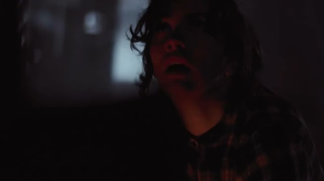
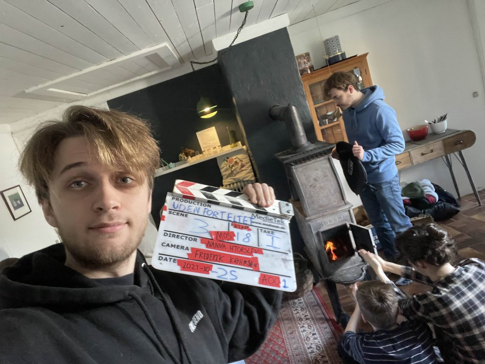
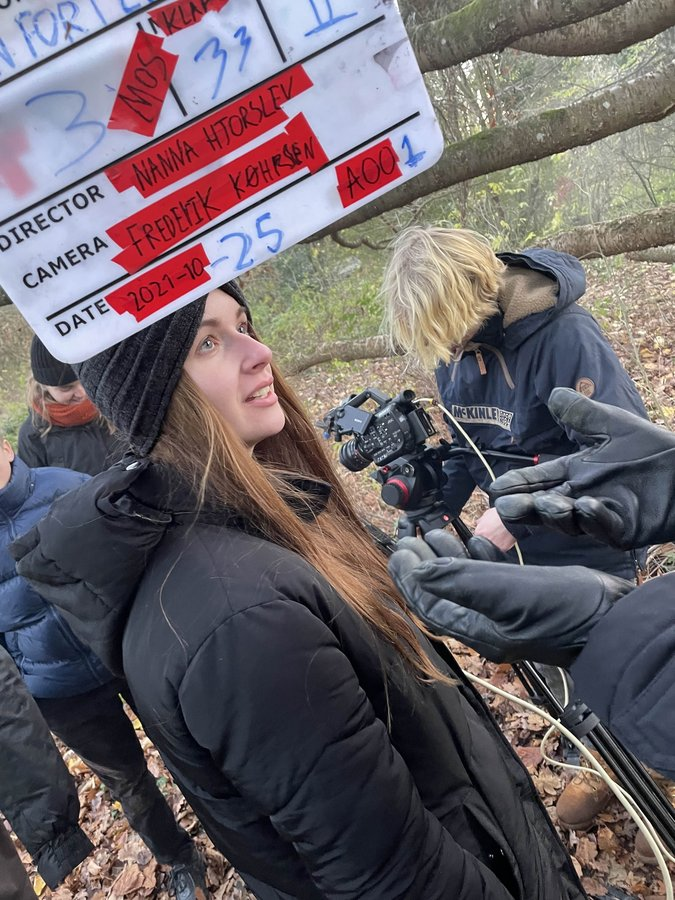

Project Details
Short film from 2021 where I worked as Coordinator, Editor, 1st AC, Boom operator, Sound designer and Clapper & Loader. An intimate drama that explores themes of isolation and community.
My Role
- Coordinator: Project coordination and communication between teams
- Editor: Post-production editing and storytelling
- 1st AC: First camera assistant focusing on focus and technical support
- Boom operator: Sound recording and microphone handling on set
- Sound designer: Creative sound design and sound effects in post-production
- Clapper & Loader: Sync and film material handling during shooting
Versatile Engagement
This project was particularly educational as I worked across both production and post-production phases. From technical camera work to creative sound design - I was involved in the entire process.
Technical Development
Outside the Tent was crucial for my understanding of how all film elements work together. Particularly the work with sound - both recording and design - gave me valuable skills.
Behind The Scenes
Get an exclusive look at the multifaceted production process behind "Outside the Tent" - from coordination to sound design.

